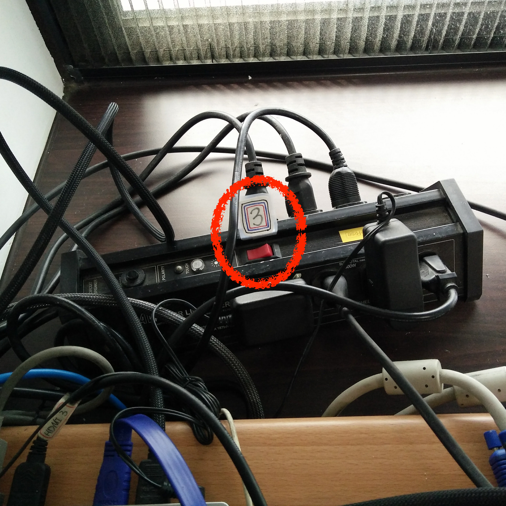

投影系統使用教學
快速提示
詳細步驟
1. 首先，無論您要連接什麼，打開投影機開關
2. 選擇要用的連接線，接上電腦，並且
確定綁線帶的顏色
＊綁線帶請勿離開線材
請選擇使用的連接線
HDMI 紅色
HDMI 藍色
VGA 黑色
VGA 黃色
VGA 綠色
選擇了HDMI紅色、HDMI藍色、VGA黑色
3. 開啟延長線開關

4. 開啟投影系統電腦電源
把蓋子打開
按下開關
5. 切換投影機輸入源
6. 選擇投影版面（例如：用
HDMI藍色就在畫面上選擇BLUE）
就可以使用了！若有問題請來信或洽土研613室。
使用完畢請倒序關閉所有電源
TOP
選擇了VGA黃色、VGA綠色
3. 切換投影機輸入源
4. 選擇投影版面（例如：如圖中左右兩邊都是
VGA綠色）
若要將左投影機改成顯示
VGA黃色，按按鈕直到圖中圈選處亮起。
就可以使用了！若有問題請來信或洽土研613室。
使用完畢請倒序關閉所有電源
TOP